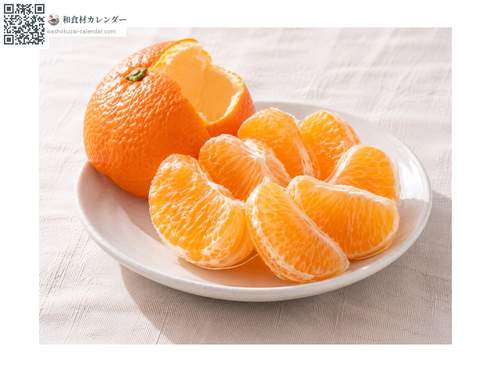
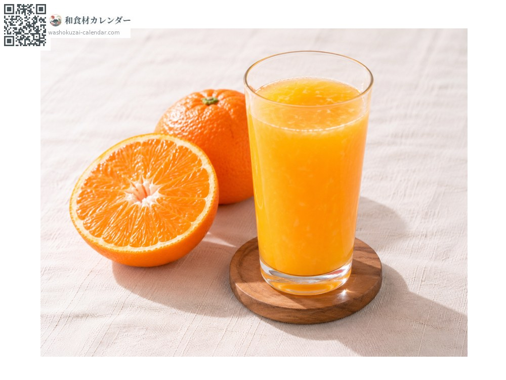
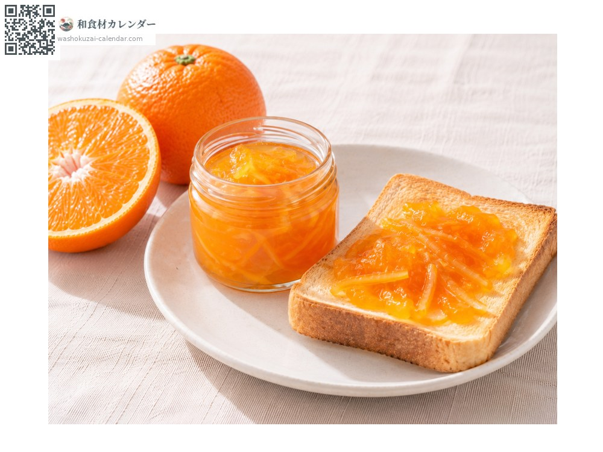
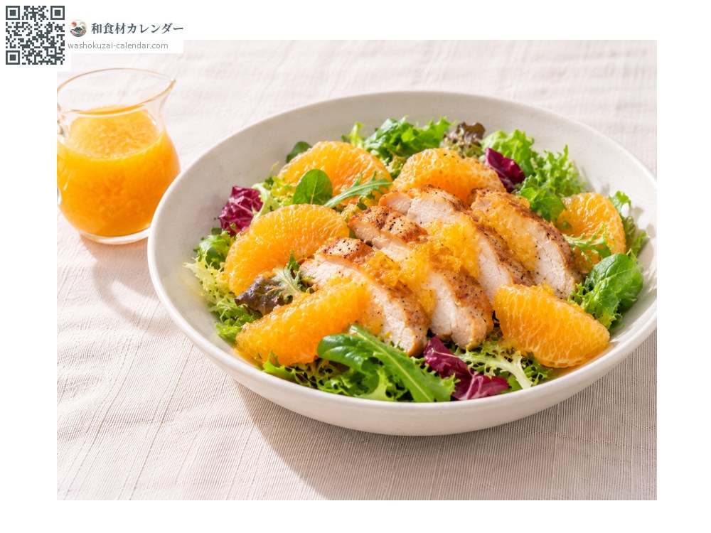

ผลไม้
ส้มอิโยกัง
伊予柑 いよかん iyokan
ชื่ออื่นiyokan, mikan
อร่อยที่สุดในเดือน ม.ค., ก.พ.

ช่วงที่อร่อยที่สุด
ม.ค.
ก.พ.
มี.ค.
เม.ย.
พ.ค.
มิ.ย.
ก.ค.
ส.ค.
ก.ย.
ต.ค.
พ.ย.
ธ.ค.
ช่วงอร่อยที่สุดมีจำหน่าย
วิธีปรุง

ทานสด
เปลือกค่อนข้างหนาแต่ปอกด้วยมือได้ กลิ่นหอมแรง

น้ำส้ม
คั้นแล้วได้สีส้มอมแดงเข้ม

มาร์มาเลด
หั่นเปลือกที่หอมเป็นเส้นฝอยแล้วเคี่ยว

น้ำสลัด
ผสมน้ำส้มกับน้ำมันและน้ำส้มสายชู ราดสลัดไก่
วิธีเลือก
เปลือกสีส้มอมแดงเข้ม ตึง ยกแล้วรู้สึกหนัก
วิธีเก็บรักษา
เก็บในที่เย็นที่อุณหภูมิห้อง ถ้าห้องอุ่นให้ใส่ถุงแล้วเก็บในช่องผักของตู้เย็น
แหล่งผลิตหลัก
เกร็ดน่ารู้
พบครั้งแรกที่จังหวัดยามางูจิในสมัยเมจิ และได้ชื่อนี้หลังจากแพร่หลายในจังหวัดเอฮิเมะซึ่งเดิมชื่อแคว้นอิโยะ ปัจจุบันเอฮิเมะผลิตส่วนใหญ่ของญี่ปุ่น พันธุ์หลักคือมิยาอุจิอิโยกัง ซึ่งเป็นกิ่งกลายพันธุ์ที่พบในเมืองมัตสึยามะในทศวรรษ 1950